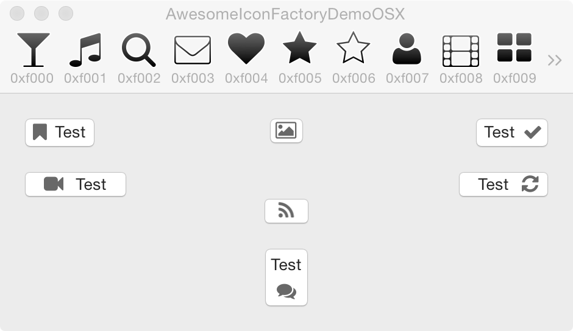
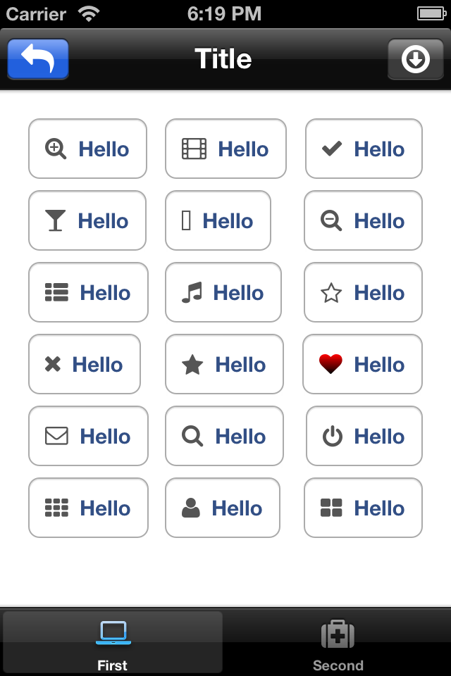

A factory for turning Font Awesome icons into images for user interface controls. Works for iOS and OS X.
 
Font Awesome was created by Dave Gandy. http://fortawesome.github.com/Font-Awesome
FontAwesomeIconFactory was created by Nikolaj Schumacher.
Add the following to your Podfile:
pod 'FontAwesomeIconFactory'
Then run pod install as usual.
If you don't use CocoaPods, copy the *.m and *.h files from the repository root level, and FontAwesome.otf into your project.